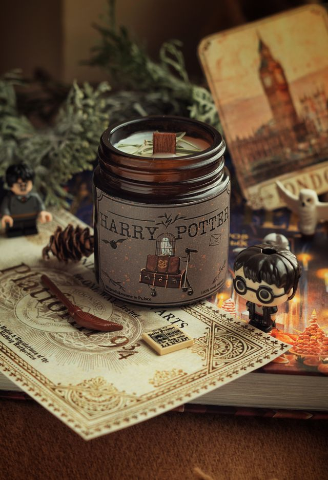
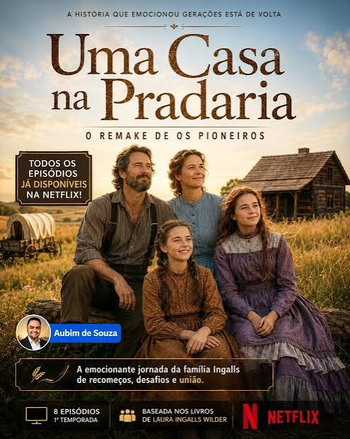
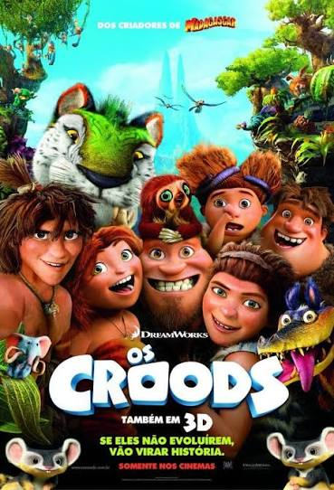
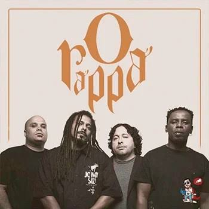
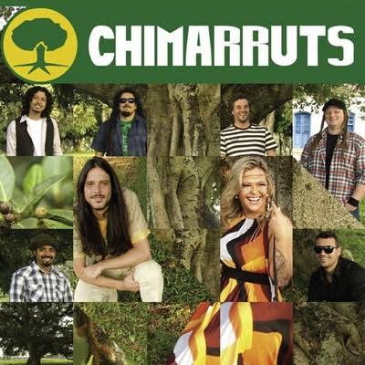
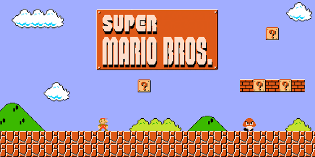

Filmes e Séries

Harry Potter é um garoto órfão que descobre ser um bruxo e passa a frequentar a Escola de Magia de Hogwarts. Ao lado de seus amigos, ele aprende a dominar seus poderes enquanto enfrenta o temível bruxo das trevas, Lord Voldemort.

A série Uma Casa na Pradaria (Netflix) acompanha a jornada da unida família Ingalls em busca de um novo começo no Oeste americano. Na fronteira selvagem, eles enfrentam as forças da natureza, doenças e disputas por terras enquanto lutam para construir um lar.

Os Croods são uma família pré-histórica que é forçada a deixar sua caverna segura após a destruição de seu lar. Guiados por um jovem nômade moderno, eles viajam por um mundo fantástico e cheio de perigos em busca de um novo refúgio.
Música e Podcasts

O Rappa foi uma das maiores bandas do rock e reggae brasileiro, conhecida por suas letras de forte impacto social e misturas de ritmos. Com o vocalista Marcelo Falcão, o grupo marcou gerações com hinos marcantes sobre as realidades das periferias, como "A Minha Alma" e "Pescador de Ilusões".
O Jota Jota Podcast, comandado por Joel Jota, é um dos maiores programas de negócios, carreira e alta performance do Brasil. Ele traz conversas inteligentes com as pessoas mais influentes do país para compartilhar mentorias, estratégias e lições de vida.

Chimarruts é uma grande banda brasileira de reggae formada em Porto Alegre que conquistou o país com suas melodias cativantes. Com letras que transmitem mensagens de amor, paz e positividade, o grupo emplacou grandes sucessos como "Do Lado de Cá" e "Versos Simples".
Games e Tecnologia
Hoje a IA é fundamental para automatizar tarefas repetitivas, otimizar processos industriais e acelerar descobertas científicas complexas. Atualmente transforma o cotidiano das pessoas ao personalizar serviços, melhorar diagnósticos médicos e facilitar o acesso à informação.

Super Mario é uma famosa franquia de jogos da Nintendo que acompanha as aventuras do encanador Mario no Reino dos Cogumelos. O objetivo principal é atravessar fases repletas de obstáculos e inimigos para salvar a Princesa Peach das garras do vilão Bowser.

Minecraft é um jogo de sobrevivência e construção em mundo aberto feito de blocos onde o jogador tem total liberdade para criar. É possível minerar recursos, construir estruturas incríveis, fabricar itens e enfrentar monstros para sobreviver ou apenas explorar.